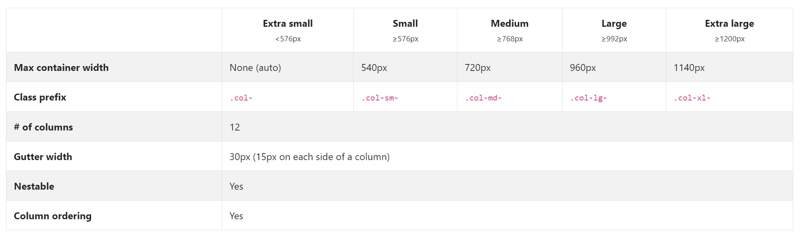
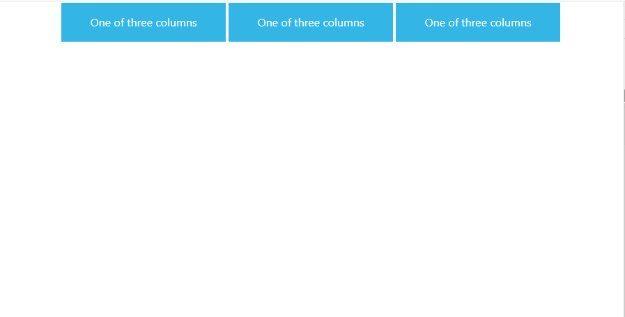

Bootstrap is the most popular HTML, CSS, and JavaScript framework for developing responsive, mobile-first websites.
It offers us many different components like Jumbotrons, Navbars, Alerts etc. But the most powerful feature of Bootstrap is so called - Bootstrap Grid
In nutshell, it's a mechanism which allows us to create a responsive website. The Bootstrap grid allows us to define rows, and each row consists of up to 12 columns.

You can either use one column that will be 12 blocks long or use multiple smaller blocks. The only rule is that you cannot exceed more than 12 blocks in a row. Blocks don't have to be equal:

To better understand what grid is let's use an example. Let's create new html file with the following content:
<!doctype html>
<html lang="en">
<head>
<!-- Required meta tags -->
<meta charset="utf-8">
<meta name="viewport" content="width=device-width, initial-scale=1, shrink-to-fit=no">
<!-- Bootstrap CSS -->
<link rel="stylesheet" href="https://stackpath.bootstrapcdn.com/bootstrap/4.3.1/css/bootstrap.min.css" integrity="sha384-ggOyR0iXCbMQv3Xipma34MD+dH/1fQ784/j6cY/iJTQUOhcWr7x9JvoRxT2MZw1T" crossorigin="anonymous">
<title>Hello, world!</title>
</head>
<body>
<h1>Hello, world!</h1>
<!-- Optional JavaScript -->
<!-- jQuery first, then Popper.js, then Bootstrap JS -->
<script src="https://code.jquery.com/jquery-3.3.1.slim.min.js" integrity="sha384-q8i/X+965DzO0rT7abK41JStQIAqVgRVzpbzo5smXKp4YfRvH+8abtTE1Pi6jizo" crossorigin="anonymous"></script>
<script src="https://cdnjs.cloudflare.com/ajax/libs/popper.js/1.14.7/umd/popper.min.js" integrity="sha384-UO2eT0CpHqdSJQ6hJty5KVphtPhzWj9WO1clHTMGa3JDZwrnQq4sF86dIHNDz0W1" crossorigin="anonymous"></script>
<script src="https://stackpath.bootstrapcdn.com/bootstrap/4.3.1/js/bootstrap.min.js" integrity="sha384-JjSmVgyd0p3pXB1rRibZUAYoIIy6OrQ6VrjIEaFf/nJGzIxFDsf4x0xIM+B07jRM" crossorigin="anonymous"></script>
</body>
</html>
This basic starter loads Bootstrap's css and js files as well as required dependencies (popper.js and jQuery , we will have separate tutorial on jQuery)
Bootstrap’s grid system uses a series of containers, rows, and columns to layout and align content. Below is an example followed by an in-depth look at how the grid comes together.
Paste following code to the body of our page:
<div class="container">
<div class="row">
<div class="col">col</div>
<div class="col">col</div>
<div class="col">col</div>
<div class="col">col</div>
</div>
<div class="row">
<div class="col-8">col-8</div>
<div class="col-4">col-4</div>
</div>
</div>
and let's add some styles so we could actually see our columns (it will be applied to all classes containing "col" in it's name):
div[class*=col] {
padding: 1rem;
background-color: #33b5e5;
border: 2px solid #fff;
color: #fff;
text-align: center;
}
As you can see we are using
As you can clearly see - we can either use .col class without specifying it's size (it's so called auto layout), or verbosely set it's size using .col-x where x is number between 1-12.
But the real power of Bootstrap comes from break points.
Bootstrap is developed to be mobile—first, so it uses a handful of media queries to create sensible breakpoints for our layouts. These breakpoints are mostly based on minimum viewport widths and allow you to scale up elements as the viewport changes.
We can specify different breakpoints to each column.
This is one of the most important features — in other words: you can define a different column size for different screen sizes. Bootstrap lists 5 different screen sizes, extra small (default), small (sm), medium (md), large (lg) and extra large (xl). Each size has a breaking point defined according to the table below:
Example:
<div class="container">
<div class="row">
<div class="col-sm">
One of three columns
</div>
<div class="col-sm">
One of three columns
</div>
<div class="col-sm">
One of three columns
</div>
</div>
</div>
Let's resize window:
As you can see our layout breaks at small (sm) screen size. No need to write custom queries.
Since columns can have mutliple classes we can modify it's size differently on different screens:
Examples:
<div class="container">
<div class="row">
<div class="col-xl-1 col-lg-2 col-md-4 col-sm-6 col-xs-12">.col-xl-1 .col-lg-2 .col-md-4 .col-sm-6 .col-xs-12</div>
<div class="col-xl-1 col-lg-2 col-md-4 col-sm-6 col-xs-12">.col-xl-1 .col-lg-2 .col-md-4 .col-sm-6 .col-xs-12</div>
<div class="col-xl-1 col-lg-2 col-md-4 col-sm-6 col-xs-12">.col-xl-1 .col-lg-2 .col-md-4 .col-sm-6 .col-xs-12</div>
<div class="col-xl-1 col-lg-2 col-md-4 col-sm-6 col-xs-12">.col-xl-1 .col-lg-2 .col-md-4 .col-sm-6 .col-xs-12</div>
<div class="col-xl-1 col-lg-2 col-md-4 col-sm-6 col-xs-12">.col-xl-1 .col-lg-2 .col-md-4 .col-sm-6 .col-xs-12</div>
<div class="col-xl-1 col-lg-2 col-md-4 col-sm-6 col-xs-12">.col-xl-1 .col-lg-2 .col-md-4 .col-sm-6 .col-xs-12</div>
<div class="col-xl-1 col-lg-2 col-md-4 col-sm-6 col-xs-12">.col-xl-1 .col-lg-2 .col-md-4 .col-sm-6 .col-xs-12</div>
<div class="col-xl-1 col-lg-2 col-md-4 col-sm-6 col-xs-12">.col-xl-1 .col-lg-2 .col-md-4 .col-sm-6 .col-xs-12</div>
<div class="col-xl-1 col-lg-2 col-md-4 col-sm-6 col-xs-12">.col-xl-1 .col-lg-2 .col-md-4 .col-sm-6 .col-xs-12</div>
<div class="col-xl-1 col-lg-2 col-md-4 col-sm-6 col-xs-12">.col-xl-1 .col-lg-2 .col-md-4 .col-sm-6 .col-xs-12</div>
<div class="col-xl-1 col-lg-2 col-md-4 col-sm-6 col-xs-12">.col-xl-1 .col-lg-2 .col-md-4 .col-sm-6 .col-xs-12</div>
<div class="col-xl-1 col-lg-2 col-md-4 col-sm-6 col-xs-12">.col-xl-1 .col-lg-2 .col-md-4 .col-sm-6 .col-xs-12</div>
</div>
</div>

I hope that you now you can understand how easy it is to build responsive components using Bootstrap. Let's get back to our app. We want to create a two—column layout which will be visible on the desktop (extra large and large) as well as tablets in horizontal aspect (medium). For smaller screen sizes we want our columns to nest one below the other.
You can check more examples here.
Let's learn now about other features and components.